PumpVLE L1 affinity
Created Tuesday 11 December 2012
An analytic model for a pump featuring static conservation of mass, energy and momentum. Here the fluid is considered to be incompressible. Thus, the hydraulic characteristics of the pump are modelled taking a constant density into account. The effect of strongly reduced flow rates when steam is drawn into the inlet at constant rotational speed and pressure difference is caught qualitatively. The model is capable to calculate zero mass flow and reverse flow.
1. Purpose of Model
 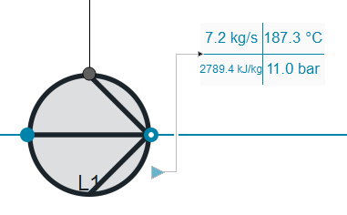
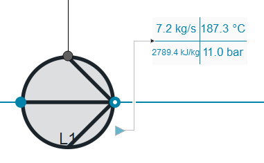
The model is appropriate when the time behaviour of the flow rate and outlet states of a pump depending on drive power and pressure difference is required and if the behaviour of the attached mechanical and electrical equipment is of interest. Especially, if zero flow rates or even back might occur in the simulation this model should be preferred over PumpVLE L1 simple.
2. Level of Detail, Physical Effects Considered and Physical Insight
2.1 Level of Detail
Referring to Brunnemann et al. [1], this model refers to the level of detail L1 because the system is modelled in an phenomenological manner, without calculating state equations. The model is of the flow model type. However, conservation of mass and energy is granted.
2.2 Physical Effects Considered
- Conservation of Mass (in steady state)
- Conservation of Linear Momentum (in steady state)
- Conservation of Energy (in steady state)
- Mechanical Efficiency
- Hydraulic Efficiency
2.3 Level of Insight
- all balance equations are considered in a steady-state manner
- The hydraulic efficiency is modelled applying four parameters to catch the dependency of rotational speed and volume flow
- during backflow, a simple, parameter-based flow resistance is assumed
3. Limits of Validity
- Flow velocity differences small.
- Difference between the heights of the ports small.
- Incompressible Flow.
4. Interfaces
4.1 Physical Connectors
- Inlet and outlet connectors combined for:
- Mass flow rate in the connection ports [kg/s]
- Thermodynamic pressure in the connection ports [Pa]
- Specific thermodynamic enthalpy close to the connection ports [J/kg]
- Medium properties at the ports.
- Mechanical port for:
- Torque [Nm]
- Absolute rotation angle [rad]
4.2 Medium Models
- Medium models of the Vapour-Liquid-Equilibrium (VLE) type are supported.
5. Nomenclature
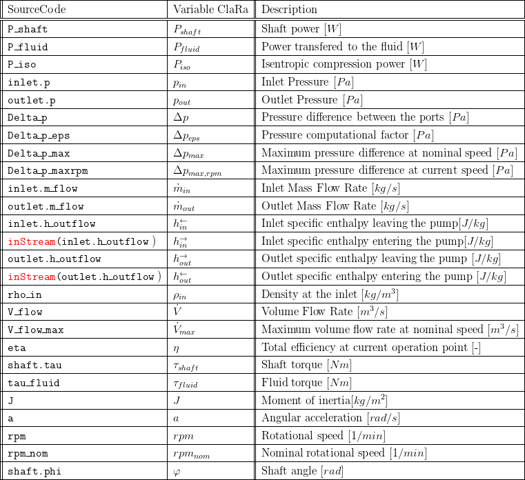
6. Governing Equations
The model considers static balance equations for mass and energy. The fluid momentum balance is reduced to a static pressure balance. In case steadyStateTorque = false a dynamic rotational momentum balance is applied.
6.1 System Description and General model approach
The equations for the model are balances of mass, energy and momentum considering the Mechanic and Hydraulic efficiencies. Optionally, a mechanical shaft connector can be activated applying either steady state or transient rotational dynamics.
6.2 Governing Model Equations
Energy Conservation
The following powers are distinguished in the model: The shaft power is transferred by a driving turbine or an e-motor to the pump's shaft. This term is shown on the left at the figure below. On the other edge of the figure the ideal (adiabatic and friction-free) compression power at given pressure difference and volume flow is shown. It is referred to as isentropic power. Adding losses to that ideal compression power gives the power actually transferred to the fluid. Finally, the difference between the shaft power provided by an external driving unit and the power consumed for compression gives a change of rotational speed.
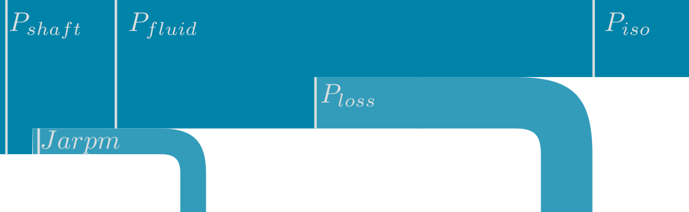
The shaft power is defined as
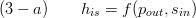.
The hydraulic power necessary to pump a certain volume flow at given pressure difference is calculated by
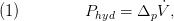
For calculation of the outlet enthalpy a steady state energy balance is applied in mass specific terms:
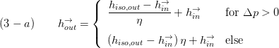.
With the efficiency η coming from a replaceable loss model, see section "Losses" below.
In the above equation (2-a) the arrows indicate a flow direction from inlet to outlet. However, since the specific enthalpies at the connectors are stream variables the reverse flow flow behaviour has to be defined. Due to the fact that the model has no thermal capacity (i.e. no control volume) there is a singularity at zero mass flow. To avoid numerical problems, no energy conservation is considered but the spec. enthalpy at the inlet equals the spec. enthalpy at the outlet:
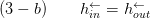
Mass Conservation
A constant fluid mass is assumed, which yields
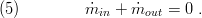
The mass flow rate is then obtained from equation (3) (as shown in figure 1) ,
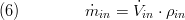
Momentum Conservation
Balance of stationary momentum is used to model the pressure changes at the outlet port of the pump,
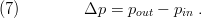
Rotational Mechanics
The mechanical connector (shaft) can dedicated whether to be used or not via the parameter useMechanicalPort.
a) mechanical port is used
If the shaft is activated then a dynamic torque balance is evaluated:
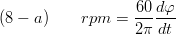
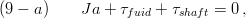
where the shafts acceleration may be zero (useSteadyTorque = true) or defined as follows:
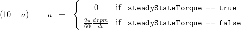
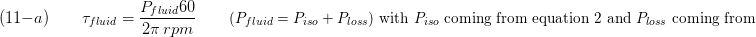
b) mechanical port is NOT used
If the mechanical port is deactivated the parameter rpm_fixed is used to define the rotational speed and the shaft angle is set to zero.
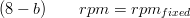
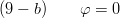
Hydraulics
The hydraulic characteristics is encapsulated in a replaceable model. The following characteristics are supported:
:ClaRa:Components:TurboMachines:Fundamentals:PumpHydraulics:MetaStable Q124
Losses
The losses are calculated by a replaceable model. The following models are available:
PumpEfficiency:EfficiencyCurves Q1
Chemistry
No chemical reaction is considered, i.e. inlet composition equals outlet composition.
Reporting
Summary
A summary is available including the following:
- an outline record:
- and two records of type FlangeVLE named inlet and outlet
7. Remarks for Usage
- Flow rate depending on drive power and pressure difference.
- Please note, the performance of the pump also depends on the attached power source (typically an e-motor or a steam turbine). If the required torque can not be supplied by this power source then the rotational speed will drop. For this reason, applying a prescribed speed/torque boundary might lead to erroneous results. For a more realistic result consider AsynchronousMotor L2 for a simple e-motor and Steam Turbine L1 for a steam turbine.
- The pump is encircled red in animation mode if NPSHa < 0.
8. Validation
For validation purposes a feedwater pump of a coal-fired power plant of the the 600 MW class is considered. The figures below compare values from the characteristic map of the pump with calculated data from the models :EfficiencyCurves Q1 and :MetaStable Q124. The congruence is good over a wide range of operation points and gives reasonable results beyond the normal field of operation which improves numerical robustness of applying models.
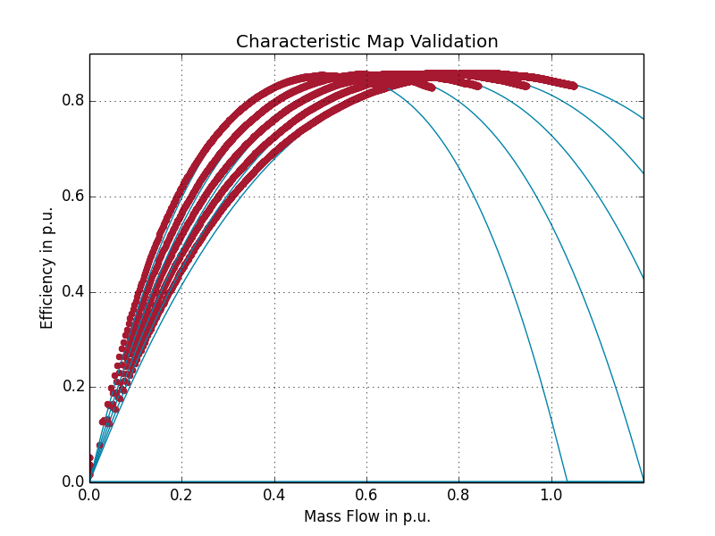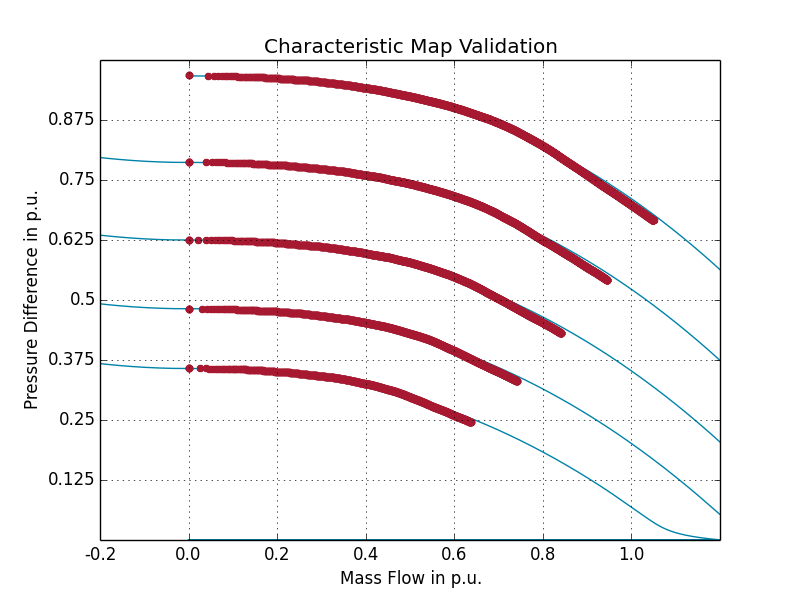
9. References
[1] Johannes Brunnemann and Friedrich Gottelt, Kai Wellner, Ala Renz, André Thüring, Volker Röder, Christoph Hasenbein, Christian Schulze, Gerhard Schmitz, Jörg Eiden: "Status of ClaRaCCS: Modelling and Simulationof Coal-Fired Power Plants with CO2 capture", 9th Modelica Conference, Munich, Germany, 2012
[2] H.Austregesilo, C.Bals, A.Hora, G.Lerchl, P.Romstedt: "ATHLET Mod 2.1 Cycle A - Models and Methods", Documentation provided by the Gesellschaft für Anlagen- und Reaktorsicherheit mbH, July 2006
[3] R.R. Schultz: "RELAP5-3D Code Manual Volume V: User's Guidelines", 2nd Revision. Idaho National Engineering and Environmental Laboratory, July 2002.
10. Version History
- 2013-Aug-28 - v0.0 - Initial implementation- F. Gottelt, XRG Simulation GmbH
- 2014-Mar-11 - v0.1 - improved numerical behaviour in case of back flow and speed reduction- F. Gottelt, XRG Simulation GmbH
- 2017-Dec.07 - v0.1 - major revision including bug fixes and introducing replaceable models for hydraulics and losses, see release notes - F.Gottelt, XRG Simulation GmbH
Backlinks: ClaRa:A User Guide:Revisions:v1.0.0 ClaRa:A User Guide:Revisions:v1.0.1 ClaRa:Components:TurboMachines:Pumps:PumpVLE L1 simple ClaRa:Components:TurboMachines:Fundamentals:PumpEfficiency:EfficiencyCurves Q1 ClaRa:Components:TurboMachines:Fundamentals:PumpHydraulics:MetaStable Q124